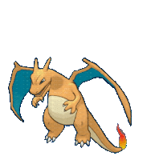

-
Bulbasaur #001

- Grama
- Veneno
Bulbasaur é um Pokémon bonito nascido com uma grande semente solidamente fixado à sua volta, a semente cresce em tamanho como o Pokémon tem.
-
ivysaur #002

- Grama
- Veneno
Ivysaur se mantém parecido com Bulbasaur,sofrendo apenas algumas mudanças. Ivysaur ganha uma cor azulada,ele tem quatro folhas verdes em suas costas com uma grande flor rosa,fechada.
-
Venusaur #003

- Grama
- Veneno
Venusaur usa sua flor para captar os raios do sol para convertê-los em energia,o que faz com que a flor fique mais vibrante. A flor libera um perfume calmante que atrai Pokémon e acalma as emoções. Este perfume fica mais forte depois de um dia chuvoso.Venusaur demonstra habilidade de manipular a natureza
-
charmander #004

- Fogo
Charmander tem Um fogo arde na ponta da cauda fina deste Pokémon e arde lá desde o nascimento de Charmander. A chama pode ser usada como uma indicação da saúde e do humor de Charmander, queimando intensamente quando o Pokémon está forte, fracamente quando está exausto, vacilando quando está feliz e brilhando quando está enfurecido. Dizem que Charmander morreria se sua chama se apagasse. No entanto, se o Pokémon estiver saudável, a chama continuará queimando mesmo se ficar um pouco molhada e fumegar na chuva..
-
charmeleon #005

- Fogo
harmeleon tem uma natureza cruel e constantemente procura oponentes. Oponentes fortes excitam este Pokémon, fazendo-o lançar chamas branco-azuladas que incendeiam seus arredores. No entanto, ele relaxará assim que vencer uma batalha .
-
charlizard #006
- Fogo
Charizard voa em busca de oponentes poderosos para a batalha, e seu fogo ficará mais quente conforme ele ganha experiência. Seu sopro de fogo é capaz de derreter rochas e geleiras enormes, e é conhecido por causar incêndios florestais acidentalmente. Embora seu sopro de fogo seja quente, ele nunca o ataca contra nenhum oponente mais fraco do que ele.
-
Squirtle #007

- Agua
Squirtle é um pequeno Pokémon reptiliano que se assemelha a uma tartaruga azul claro,A casca de Squirtle é uma ferramenta útil. Ele pode se retirar para dentro da concha para proteção ou para dormir. A forma arredondada e ranhurada ajuda a reduzir a resistência à água, permitindo que o Pokémon nade em alta velocidade. Squirtle pode borrifar água espumosa de sua boca com grande precisão..
-
Wartortle #008

- Agua
Wartortle têm mais dificuldade em andar em terra e manter o equilíbrio na água. Para manter o equilíbrio enquanto nada em alta velocidade, Wartortle move suas orelhas peludas e cauda como lemes e hastes de equilíbrio. O ar pode ser armazenado em seu pelo para mergulhos subaquáticos prolongados. Esconde-se na água quando caça e emerge para surpreender a sua presa.
-
Blastoise #009

- Agua
Blastoise é um grande Pokémon tartaruga bípede . Seu corpo é azul e quase todo escondido por sua dura casca marrom. Esta concha tem uma parte inferior de cor creme e uma crista branca envolvendo seus braços e separando as metades superior e inferior. Dois poderosos canhões de água residem no topo de sua concha sobre seus ombros. Esses canhões podem ser estendidos ou retirados. A cabeça de Blastoise tem orelhas triangulares pretas por dentro, pequenos olhos castanhos e mandíbula inferior de cor creme. Seus braços são grossos e tem três garras em cada mão. Seus pés têm três garras na frente e uma atrás. Saindo do fundo de sua concha está uma cauda atarracada.
-
Cartepie #010

- Inseto
Caterpie é um Pokémon inseto que se assemelha a uma lagarta verde com uma parte inferior amarela e cauda em forma de lágrima. Existem marcas amarelas em forma de anel nas laterais de seu corpo segmentado, que se assemelham a seus olhos e servem para assustar os predadores.